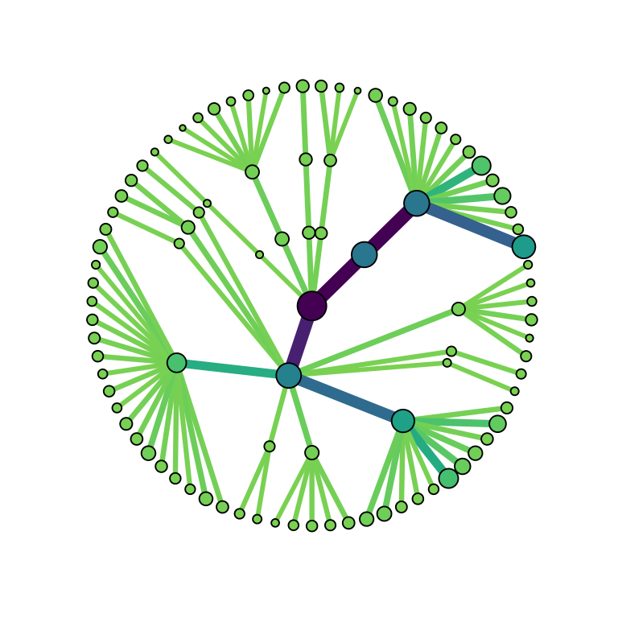
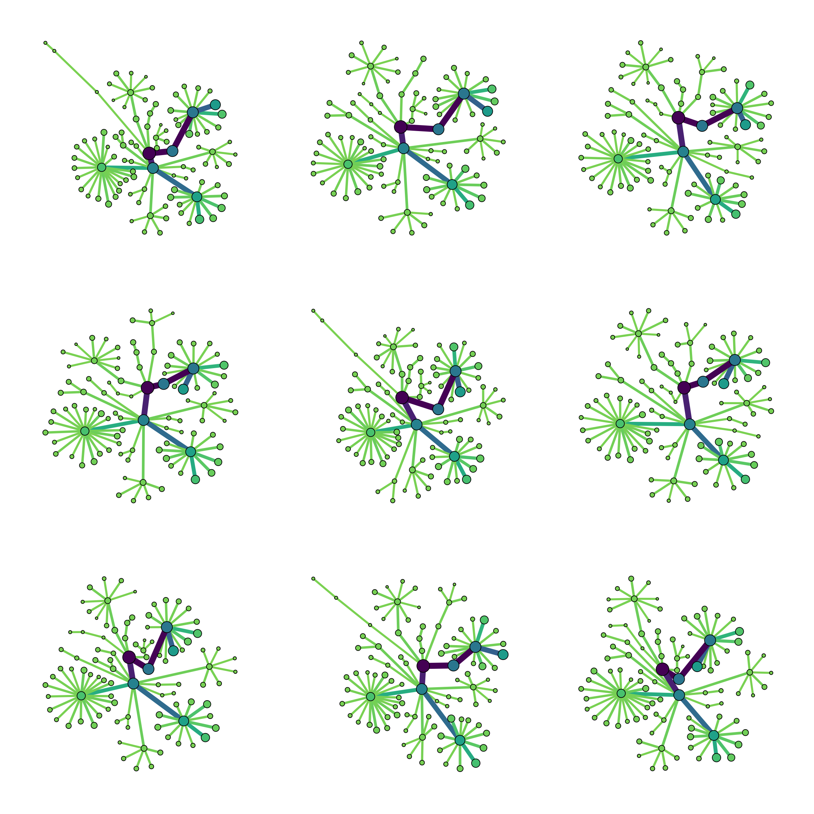
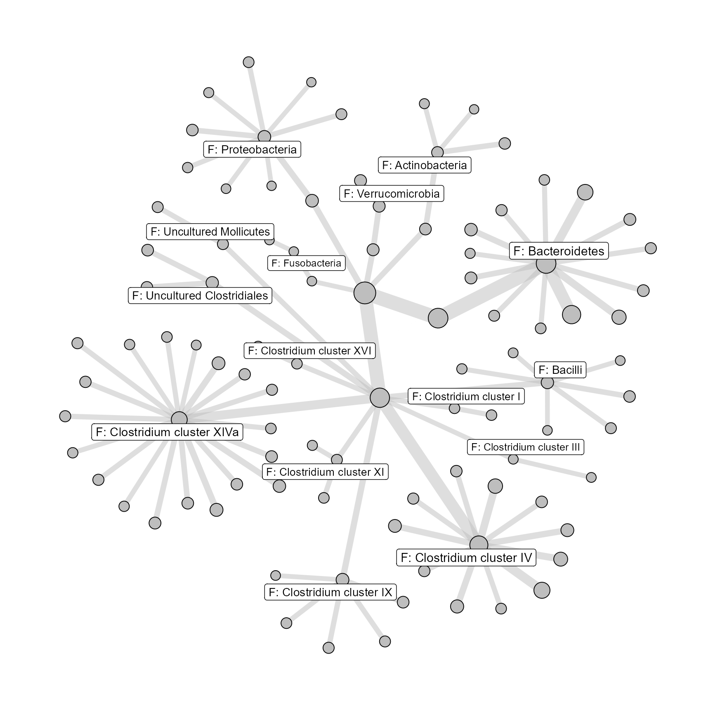

library(microbiome) #> Loading required package: phyloseq #> Loading required package: ggplot2 #> Warning: package 'ggplot2' was built under R version 4.0.2 #> #> microbiome R package (microbiome.github.com) #> #> #> #> Copyright (C) 2011-2020 Leo Lahti, #> Sudarshan Shetty et al. <microbiome.github.io> #> #> Attaching package: 'microbiome' #> The following object is masked from 'package:ggplot2': #> #> alpha #> The following object is masked from 'package:base': #> #> transform library(igraph) #> Warning: package 'igraph' was built under R version 4.0.3 #> #> Attaching package: 'igraph' #> The following object is masked from 'package:microbiome': #> #> diversity #> The following objects are masked from 'package:stats': #> #> decompose, spectrum #> The following object is masked from 'package:base': #> #> union library(tidygraph) #> Warning: package 'tidygraph' was built under R version 4.0.3 #> #> Attaching package: 'tidygraph' #> The following object is masked from 'package:igraph': #> #> groups #> The following object is masked from 'package:stats': #> #> filter library(ggraph) #> Warning: package 'ggraph' was built under R version 4.0.3 library(patchwork) #> Warning: package 'patchwork' was built under R version 4.0.3 library(dplyr) #> Warning: package 'dplyr' was built under R version 4.0.2 #> #> Attaching package: 'dplyr' #> The following objects are masked from 'package:igraph': #> #> as_data_frame, groups, union #> The following objects are masked from 'package:stats': #> #> filter, lag #> The following objects are masked from 'package:base': #> #> intersect, setdiff, setequal, union
This is a work in progress script about visualising taxon-specific statistics on a taxonomic tree (kinda like a phylogenetic tree with arbitrary branch lengths and with connections not directly defined by phylogenetic similarity).
In the future I will turn this process into a (couple of) function(s) with documentation for visualising any statistic/numbers as the colour and size of the nodes and edges of this tree.
The layout should be somewhat like a circular tree, rooted at e.g. kingdom, but not uniformly arranged. The characteristic/quasi-stochastic visual arrangement of the tree actually will be a feature that allows easy visual orientation across multiple copies of the same tree.
Much of this can be done with metacoder::heat_tree() but this package has several limitations in my opinion:
geom_polygon
metacoder package is very complicated, meaning:
data(dietswap) ps <- dietswap ps <- ps %>% tax_filter(min_prevalence = 0.1, min_total_abundance = 1000) #> Proportional min_prevalence given: 0.1 --> min 23/222 samples. # This example dataset has some taxa with the same name for phylum and family... this needs to be fixed tt <- sapply(rank_names(ps), function(r){ tax_table(ps)[, r] <- as.vector(tax_table(ps)[, r]) %>% paste0(substr(r, 1, 1), ': ', .) }) rownames(tt) <- taxa_names(ps) # this example dataset also has no root, this is unusual and needs to be fixed tax_table(ps) <- cbind(root = 'root', tt) # test non-unique genera problem handling tax_table(ps)[c(3,4,56), 'Genus'] <- "G: unknown"
Creating a graph/network object from a phyloseq will be incorporated into a function.
# create taxon nodes and calculate basic info about each taxon (at all ranks) ranks <- phyloseq::rank_names(ps) n_samples <- phyloseq::nsamples(ps) node_info <- lapply(1:length(ranks), FUN = function(r){ ps <- microbiome::aggregate_taxa(ps, level = ranks[[r]]) out <- data.frame( taxon_name_unique = phyloseq::taxa_names(ps), taxon_name = as.vector(phyloseq::tax_table(ps)[, ranks[[r]]]), taxon_parent = as.vector(phyloseq::tax_table(ps)[, ranks[[max(r - 1, 1)]]]), taxon_count = phyloseq::taxa_sums(ps) ) out$taxon_mean <- out$taxon_count/n_samples out }) names(node_info) <- ranks node_df <- purrr::reduce(node_info, rbind.data.frame) # create edges df from node df edge_list <- lapply( node_df$taxon_name_unique, function(unique_name){ data.frame( from = node_df[node_df$taxon_name_unique == unique_name, "taxon_parent"], to = unique_name ) }) edge_df <- purrr::reduce(edge_list, rbind.data.frame) edge_df <- dplyr::distinct(edge_df, dplyr::across(tidyselect::everything())) edge_df <- edge_df[edge_df$from != edge_df$to,] # edge_df gets all attributes from the "to" node edge_df <- edge_df %>% left_join(node_df, by = c('to' = 'taxon_name_unique')) # make a graph graph <- tbl_graph(nodes = node_df, node_key = 'taxon_name_unique', edges = edge_df, directed = TRUE) layout <- ggraph::create_layout(graph, layout = 'tree', circular = TRUE)
Actually plotting the graph will probably be left to the user
# plot a graph ggraph(layout) + theme_graph(base_family = 'sans') + geom_edge_link(aes(edge_width = sqrt(taxon_mean), edge_colour = taxon_mean), show.legend = FALSE) + geom_node_point(aes(size = sqrt(taxon_mean), fill = taxon_mean), shape = 21, show.legend = FALSE) + scale_edge_width_continuous(range = c(1, 3)) + scale_edge_colour_viridis(direction = -1, end = 0.8) + scale_fill_viridis(direction = -1, end = 0.8)

Here I use the davidson-harel algorithm, with trial-and-error weights, to adjust the tree layout above, using a trial-and-error number of iterations.
# adjust layout of graph with davidson-harel # (allows weighting crossover avoidance and edge lengths etc) adjust_layout <- function(g, l) { # adjusted_coords <- igraph::layout_with_dh( graph = g, coords = as.matrix(l[, c("x", "y")]), maxiter = 3, fineiter = 10, weight.edge.lengths = edge_density(graph) * 100, weight.edge.crossings = edge_density(graph) * 100000, weight.node.edge.dist = edge_density(graph) * 10, weight.node.dist = edge_density(graph) * 1, weight.border = edge_density(graph) * 1 ) adjusted_layout <- layout adjusted_layout[, c("x", "y")] <- adjusted_coords return(adjusted_layout) }
This is a stochastic process which I do not let find an optimum. So set.seed is important here.
I will expose the weights of the dh algo (with my defaults).
I will document how to rerun a few times with RNG seed setting to help users find a layout they like and re-use it (as below).
These differ only randomly, some are clearly more aesthetically pleasing than others. I like the top right one.
plots <- lapply(layouts_list, function(al){ ggraph(graph = al) + theme_graph(base_family = 'sans') + geom_edge_link(aes(edge_width = sqrt(taxon_mean), edge_colour = taxon_mean), show.legend = FALSE) + geom_node_point(aes(size = sqrt(taxon_mean), fill = taxon_mean), shape = 21, show.legend = FALSE) + # geom_node_label( # aes(label = taxon_name_unique), position = 'identity', # size = 1 # ) + scale_edge_width_continuous(range = c(1, 3)) + scale_edge_colour_viridis(direction = -1, end = 0.8) + scale_fill_viridis(direction = -1, end = 0.8) + NULL }) patchwork::wrap_plots(plots, ncol = 3, byrow = TRUE)

Besides just selecting the layout number 3 with layouts_list[[3]], the whole generation can be rerun by setting the seed as equal to 3 again, as demonstrated below. You could use such a larger grey version with labels as a key.
set.seed(3) al <- adjust_layout(graph, l = layout) p <- ggraph(graph = al) + theme_graph(base_family = 'sans') + geom_edge_link(aes(edge_width = sqrt(taxon_mean)), edge_colour = "grey", alpha = 0.5, show.legend = FALSE) + geom_node_point(aes(size = sqrt(taxon_mean)), fill = "grey", shape = 21, show.legend = FALSE) + geom_node_label( aes(label = if_else(grepl('^F', taxon_name_unique), taxon_name_unique, NA_character_), size = log10(taxon_mean)), repel = TRUE, show.legend = FALSE ) + scale_size_continuous(range = c(3, 9)) + scale_edge_width_continuous(range = c(2, 6)) + NULL p #> Warning: Removed 82 rows containing missing values (geom_label_repel).

devtools::session_info() #> - Session info --------------------------------------------------------------- #> setting value #> version R version 4.0.1 (2020-06-06) #> os Windows 10 x64 #> system x86_64, mingw32 #> ui RTerm #> language (EN) #> collate English_United Kingdom.1252 #> ctype English_United Kingdom.1252 #> tz Europe/Berlin #> date 2020-11-03 #> #> - Packages ------------------------------------------------------------------- #> package * version date lib source #> ade4 1.7-15 2020-02-13 [3] CRAN (R 4.0.3) #> ape 5.4-1 2020-08-13 [3] CRAN (R 4.0.3) #> assertthat 0.2.1 2019-03-21 [3] CRAN (R 4.0.0) #> backports 1.1.8 2020-06-17 [3] CRAN (R 4.0.1) #> Biobase 2.48.0 2020-04-27 [3] Bioconductor #> BiocGenerics 0.34.0 2020-04-27 [3] Bioconductor #> biomformat 1.16.0 2020-04-27 [3] Bioconductor #> Biostrings 2.56.0 2020-04-27 [3] Bioconductor #> callr 3.5.1 2020-10-13 [3] CRAN (R 4.0.3) #> cli 2.1.0 2020-10-12 [3] CRAN (R 4.0.3) #> cluster 2.1.0 2019-06-19 [3] CRAN (R 4.0.1) #> codetools 0.2-16 2018-12-24 [3] CRAN (R 4.0.1) #> colorspace 1.4-1 2019-03-18 [3] CRAN (R 4.0.0) #> crayon 1.3.4 2017-09-16 [3] CRAN (R 4.0.0) #> data.table 1.13.2 2020-10-19 [3] CRAN (R 4.0.3) #> desc 1.2.0 2018-05-01 [3] CRAN (R 4.0.0) #> devtools 2.3.2 2020-09-18 [3] CRAN (R 4.0.3) #> digest 0.6.25 2020-02-23 [3] CRAN (R 4.0.0) #> dplyr * 1.0.2 2020-08-18 [3] CRAN (R 4.0.2) #> ellipsis 0.3.1 2020-05-15 [3] CRAN (R 4.0.0) #> evaluate 0.14 2019-05-28 [3] CRAN (R 4.0.0) #> fansi 0.4.1 2020-01-08 [3] CRAN (R 4.0.0) #> farver 2.0.3 2020-01-16 [3] CRAN (R 4.0.0) #> foreach 1.5.1 2020-10-15 [3] CRAN (R 4.0.3) #> fs 1.5.0 2020-07-31 [3] CRAN (R 4.0.2) #> generics 0.0.2 2018-11-29 [3] CRAN (R 4.0.0) #> ggforce 0.3.2 2020-06-23 [3] CRAN (R 4.0.3) #> ggplot2 * 3.3.2 2020-06-19 [3] CRAN (R 4.0.2) #> ggraph * 2.0.3 2020-05-20 [3] CRAN (R 4.0.3) #> ggrepel 0.8.2 2020-03-08 [3] CRAN (R 4.0.2) #> glue 1.4.2 2020-08-27 [3] CRAN (R 4.0.2) #> graphlayouts 0.7.1 2020-10-26 [3] CRAN (R 4.0.3) #> gridExtra 2.3 2017-09-09 [3] CRAN (R 4.0.3) #> gtable 0.3.0 2019-03-25 [3] CRAN (R 4.0.0) #> htmltools 0.5.0 2020-06-16 [3] CRAN (R 4.0.2) #> igraph * 1.2.6 2020-10-06 [3] CRAN (R 4.0.3) #> IRanges 2.22.2 2020-05-21 [3] Bioconductor #> iterators 1.0.13 2020-10-15 [3] CRAN (R 4.0.3) #> jsonlite 1.7.1 2020-09-07 [3] CRAN (R 4.0.3) #> knitr 1.30 2020-09-22 [3] CRAN (R 4.0.2) #> labeling 0.4.2 2020-10-20 [3] CRAN (R 4.0.3) #> lattice 0.20-41 2020-04-02 [3] CRAN (R 4.0.1) #> lifecycle 0.2.0 2020-03-06 [3] CRAN (R 4.0.0) #> magrittr 1.5 2014-11-22 [3] CRAN (R 4.0.0) #> MASS 7.3-53 2020-09-09 [3] CRAN (R 4.0.3) #> Matrix 1.2-18 2019-11-27 [3] CRAN (R 4.0.1) #> memoise 1.1.0 2017-04-21 [3] CRAN (R 4.0.0) #> mgcv 1.8-33 2020-08-27 [3] CRAN (R 4.0.3) #> microbiome * 1.10.0 2020-04-27 [3] Bioconductor #> microViz * 0.0.0.9000 2020-11-03 [2] local #> multtest 2.44.0 2020-04-27 [3] Bioconductor #> munsell 0.5.0 2018-06-12 [3] CRAN (R 4.0.0) #> nlme 3.1-150 2020-10-24 [3] CRAN (R 4.0.3) #> patchwork * 1.0.1 2020-06-22 [3] CRAN (R 4.0.3) #> permute 0.9-5 2019-03-12 [3] CRAN (R 4.0.0) #> phyloseq * 1.32.0 2020-04-27 [3] Bioconductor #> pillar 1.4.6 2020-07-10 [3] CRAN (R 4.0.2) #> pkgbuild 1.1.0 2020-07-13 [3] CRAN (R 4.0.2) #> pkgconfig 2.0.3 2019-09-22 [3] CRAN (R 4.0.0) #> pkgdown 1.6.1 2020-09-12 [3] CRAN (R 4.0.3) #> pkgload 1.1.0 2020-05-29 [3] CRAN (R 4.0.0) #> plyr 1.8.6 2020-03-03 [3] CRAN (R 4.0.0) #> polyclip 1.10-0 2019-03-14 [3] CRAN (R 4.0.3) #> prettyunits 1.1.1 2020-01-24 [3] CRAN (R 4.0.0) #> processx 3.4.4 2020-09-03 [3] CRAN (R 4.0.3) #> ps 1.3.3 2020-05-08 [3] CRAN (R 4.0.0) #> purrr 0.3.4 2020-04-17 [3] CRAN (R 4.0.0) #> R6 2.5.0 2020-10-28 [3] CRAN (R 4.0.1) #> ragg 0.4.0 2020-10-05 [3] CRAN (R 4.0.3) #> Rcpp 1.0.5 2020-07-06 [3] CRAN (R 4.0.2) #> remotes 2.2.0 2020-07-21 [3] CRAN (R 4.0.3) #> reshape2 1.4.4 2020-04-09 [3] CRAN (R 4.0.0) #> rhdf5 2.32.4 2020-10-05 [3] Bioconductor #> Rhdf5lib 1.10.1 2020-07-09 [3] Bioconductor #> rlang 0.4.7 2020-07-09 [3] CRAN (R 4.0.2) #> rmarkdown 2.5 2020-10-21 [3] CRAN (R 4.0.3) #> rprojroot 1.3-2 2018-01-03 [3] CRAN (R 4.0.0) #> rstudioapi 0.11 2020-02-07 [3] CRAN (R 4.0.0) #> Rtsne 0.15 2018-11-10 [3] CRAN (R 4.0.2) #> S4Vectors 0.26.1 2020-05-16 [3] Bioconductor #> scales 1.1.1 2020-05-11 [3] CRAN (R 4.0.0) #> sessioninfo 1.1.1 2018-11-05 [3] CRAN (R 4.0.0) #> stringi 1.5.3 2020-09-09 [3] CRAN (R 4.0.3) #> stringr 1.4.0 2019-02-10 [3] CRAN (R 4.0.0) #> survival 3.2-7 2020-09-28 [3] CRAN (R 4.0.3) #> systemfonts 0.3.2 2020-09-29 [3] CRAN (R 4.0.3) #> testthat 2.3.2 2020-03-02 [3] CRAN (R 4.0.0) #> textshaping 0.1.2 2020-10-08 [3] CRAN (R 4.0.3) #> tibble 3.0.4 2020-10-12 [3] CRAN (R 4.0.3) #> tidygraph * 1.2.0 2020-05-12 [3] CRAN (R 4.0.3) #> tidyr 1.1.2 2020-08-27 [3] CRAN (R 4.0.3) #> tidyselect 1.1.0 2020-05-11 [3] CRAN (R 4.0.0) #> tweenr 1.0.1 2018-12-14 [3] CRAN (R 4.0.3) #> usethis 1.6.3 2020-09-17 [3] CRAN (R 4.0.3) #> vctrs 0.3.4 2020-08-29 [3] CRAN (R 4.0.3) #> vegan 2.5-6 2019-09-01 [3] CRAN (R 4.0.0) #> viridis 0.5.1 2018-03-29 [3] CRAN (R 4.0.3) #> viridisLite 0.3.0 2018-02-01 [3] CRAN (R 4.0.0) #> withr 2.3.0 2020-09-22 [3] CRAN (R 4.0.2) #> xfun 0.18 2020-09-29 [3] CRAN (R 4.0.3) #> XVector 0.28.0 2020-04-27 [3] Bioconductor #> yaml 2.2.1 2020-02-01 [3] CRAN (R 4.0.0) #> zlibbioc 1.34.0 2020-04-27 [3] Bioconductor #> #> [1] C:/Users/david.barnett/AppData/Local/Temp/RtmpGAyKgk/temp_libpath140c24dd647 #> [2] C:/Users/david.barnett/AppData/Local/Temp/RtmpGAyKgk/temp_libpath140c65992ed6 #> [3] C:/Program Files/R/R-4.0.1/library